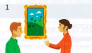
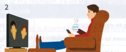
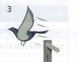
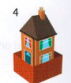

Bài tập
42.1 Nối phần đầu của mỗi thành ngữ ở cột bên trái với phần cuối tương ứng ở cột bên phải.
- sitting on the
- getting your foot in the
- getting out of bed on the wrong
- flying off the
- putting someone in the
- feeling at
- burning the candle at both
- home
- handle
- fence
- picture
- ends
- door
- side
42.2 Trả lời các câu hỏi sau.
- Một người quyết đoán có nhiều khả năng sẽ sit on the fence (lưỡng lự/trung lập) hay come down on one side or the other (đưa ra quyết định chọn bên này hoặc bên kia) hơn?
- Nếu một sinh viên nhận một công việc làm thêm vào kỳ nghỉ tại một công ty lớn để get a foot in the door (bước chân vào cửa / tạo bước đệm), điều đó gợi ý gì về các kế hoạch của sinh viên đó?
- Trong những hoàn cảnh nào thì mọi người thường burn the candle at both ends (thức khuya dậy sớm / làm việc kiệt sức)?
- Bạn có nhiều khả năng sẽ nói rằng một điều gì đó quan trọng hay một điều gì đó tầm thường được brought home to you (hiểu rõ / nhận thức sâu sắc) hơn?
- Bạn nghĩ ai đó sẽ hài lòng hay không hài lòng nếu bạn took a leaf out of their book (no gương / bắt chước họ)?
- Nếu bạn keep someone in the picture (cho ai đó biết rõ tình hình), bạn đang trung thực với họ hay không?
- Bạn cảm thấy thế nào nếu bạn get out of bed on the wrong side (thức dậy với tâm trạng cáu bẳn)?
- Nếu ai đó hits the roof (nổi giận lôi đình), họ đang ở trong tâm trạng như thế nào?
42.3 Những bức tranh này làm bạn liên tưởng đến những thành ngữ nào?
1

2

3

4

42.4 Viết lại phần gạch chân của mỗi câu sau bằng một thành ngữ.
- Sẽ mất một khoảng thời gian trước khi tác động của luật mới được cảm nhận đầy đủ bởi người dân bình thường.
- Sophie sẽ tự làm mình ngã bệnh nếu cô ấy tiếp tục cho phép bản thân ngủ quá ít.
- Trước khi bạn tiếp quản dự án, tôi sẽ cho bạn biết chính xác tình hình của nó như thế nào.
- Cảnh sát nghĩ rằng xét nghiệm DNA sẽ cung cấp bằng chứng cần thiết để chứng minh ai là kẻ sát nhân.
- Jim đã ở trong tâm trạng rất tồi tệ suốt cả ngày.
- Chính phủ không thể trì hoãn việc đưa ra quyết định mãi được.
- Dạo này Rob rất dễ nổi giận dù chỉ với sự khiêu khích nhỏ nhất. (Đưa ra hai câu trả lời)
- Nếu bạn muốn có thân hình cân đối, tại sao bạn không làm như Katie đã làm và tham gia một phòng tập thể dục?